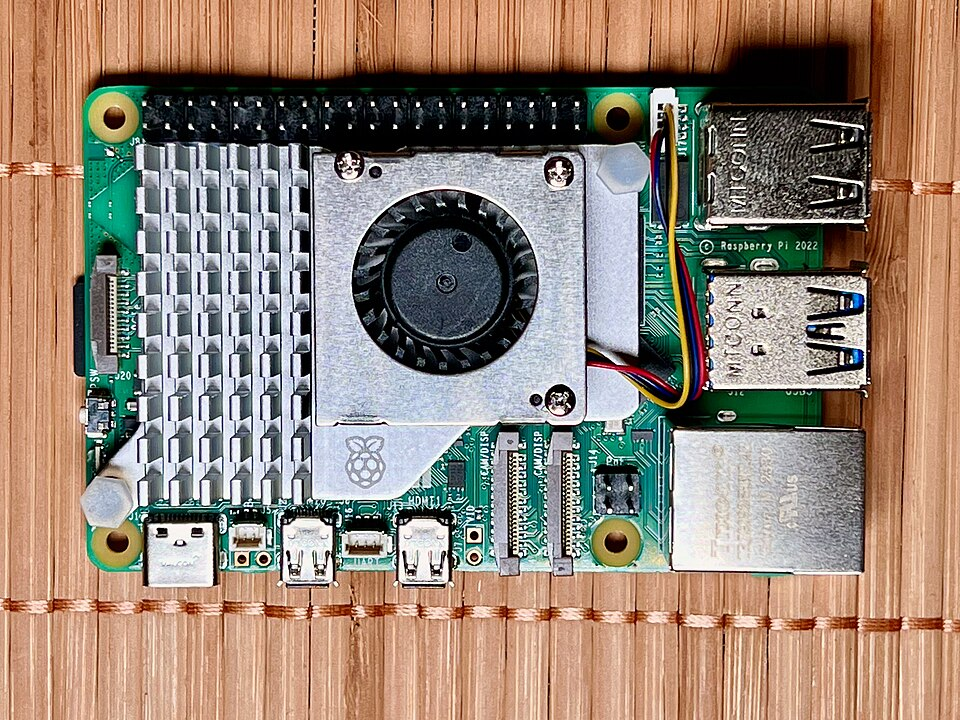

Qué Raspberry Pi 5 comprar: RAM, fuente y caja (guía completa)
La Raspberry Pi 5 es la placa favorita para empezar un home lab: barata, eficiente y con una comunidad enorme. Pero comprarla bien no es tan simple como añadir "un kit" al carrito: la cantidad de RAM, la fuente de alimentación y la caja cambian radicalmente la experiencia. Y los kits genéricos suelen cobrarte de más por accesorios mediocres.

En esta guía te explicamos cuánta RAM necesitas según tu uso, por qué la fuente oficial de 27 W no es un capricho, qué refrigeración conviene en cada caso y qué configuraciones recomendamos para los usos más habituales.
Cuánta RAM: 4 GB vs. 8 GB vs. 16 GB
La Raspberry Pi 5 se vende en tres versiones de memoria. La elección depende de lo que vayas a correr:
- 4 GB: suficiente para un solo servicio ligero: Pi-hole, un bloqueador de DNS, un pequeño servidor de ficheros o un proyecto de electrónica. Si tu plan es "una Pi, una tarea", aquí ahorras sin sacrificar nada.
- 8 GB: la opción equilibrada y la que recomendamos a la mayoría. Permite correr varios servicios en Docker a la vez (Pi-hole + un panel + un gestor de descargas, por ejemplo) con margen de sobra. Es el punto dulce entre precio y versatilidad.
- 16 GB: solo tiene sentido para usos exigentes: varios contenedores pesados simultáneos, compilación de software en la propia placa o uso como ordenador de escritorio ligero con muchas pestañas abiertas. Para un home lab típico, es pagar por memoria que quedará sin usar.
Regla práctica: si dudas entre 4 y 8 GB, elige 8 GB. La diferencia de precio es moderada y te evita quedarte corto cuando (inevitablemente) quieras añadir "un servicio más". El salto a 16 GB, en cambio, solo compensa con un plan concreto que lo justifique.
Por qué la fuente oficial de 27 W importa
Este es el accesorio donde más dinero se pierde por ahorrar mal. Según las especificaciones del fabricante, la Raspberry Pi 5 necesita una fuente de 5 V y 5 A (27 W) con negociación de potencia por USB-C para rendir al máximo.
- Con la fuente oficial: la placa recibe toda la potencia que necesita, incluidos los picos al conectar discos USB o periféricos exigentes. Cero avisos, rendimiento completo.
- Con un cargador genérico: aparecen los avisos de bajo voltaje (el famoso icono del rayo), la placa limita su rendimiento automáticamente y los discos USB pueden desconectarse en los peores momentos. Un cargador "de móvil" aunque ponga "carga rápida" no sirve: la Pi 5 necesita el protocolo de negociación concreto.
La comunidad de usuarios reporta que una gran parte de los problemas de "inestabilidad" de la Pi 5 se resuelven cambiando a la fuente oficial. Si compras la placa suelta, suma la fuente oficial al pedido desde el primer día: es uno de los accesorios con mejor retorno de toda la guía. Rango orientativo: entre $12 y $18 (septiembre de 2026). Ver precio
Refrigeración: pasiva vs. activa según la carga
La Pi 5 se calienta más que sus predecesoras, y con calor sostenido reduce su velocidad para protegerse. Tienes dos enfoques:
- Pasiva (disipador o caja metálica): silenciosa y sin piezas móviles. Suficiente para cargas ligeras y medias: Pi-hole, servidor DNS, automatizaciones o un servicio ocasional. Una caja metálica que hace de disipador es elegante y eficaz para estos casos.
- Activa (ventilador): necesaria si la placa va a trabajar de forma sostenida: varios contenedores, compilaciones, transcodificación ligera o uso como escritorio. El ventilador oficial es pequeño y, según las especificaciones del fabricante, solo se activa cuando hace falta.
Lo que sí debes evitar: las cajas de plástico cerradas sin ventilación. Son hornos en miniatura y la forma más rápida de tener una Pi 5 lenta por calor. Cualquier caja que elijas debe tener ventilación real o ventilador.
Qué evitar: los kits genéricos sobrepreciados
Los "kits completos" de vendedores genéricos suelen incluir: placa + fuente no oficial + caja de plástico cerrada + disipadores diminutos + tarjeta microSD lenta, todo por más dinero que comprando cada cosa por separado. Problemas típicos:
- La fuente genérica provoca los avisos de bajo voltaje descritos arriba.
- La tarjeta microSD incluida suele ser lenta y de poca duración; para el sistema operativo conviene una tarjeta de marca reconocida con buena resistencia a escrituras, o mejor aún, arrancar desde SSD por USB.
- Pagas accesorios que no necesitas (cables HDMI larguísimos, carcasas decorativas) mientras lo esencial viene en versión barata.
La compra inteligente es por componentes: placa con la RAM que necesites, fuente oficial, caja con ventilación adecuada a tu uso y una buena microSD. Suele salir igual o más barato, y cada pieza es la correcta.
Tabla: configuraciones recomendadas por caso de uso
| Caso de uso | RAM | Fuente | Caja / refrigeración | Almacenamiento |
|---|---|---|---|---|
| Pi-hole / bloqueo de anuncios | 4 GB | Oficial 27 W | Pasiva (caja metálica disipadora) | microSD de calidad |
| Home lab con Docker (varios servicios) | 8 GB | Oficial 27 W | Activa (ventilador oficial o caja con fan) | SSD por USB |
| Servidor multimedia ligero (Jellyfin en directo) | 8 GB | Oficial 27 W | Activa | SSD por USB + disco externo |
| Escritorio ligero / uso exigente | 16 GB | Oficial 27 W | Activa de calidad | SSD por USB (NVMe con adaptador) |
Antes de comprar
- Compra la placa y la fuente juntas. Estrenar la Pi 5 con un cargador viejo "para probar" es la receta de los problemas de voltaje. La fuente oficial desde el día uno.
- Piensa en el almacenamiento desde el principio. La microSD vale para empezar, pero si el plan es un servidor serio, contempla un SSD por USB: más rápido y mucho más duradero ante escrituras constantes.
- Mide el espacio y el ruido. Si la Pi va al salón, una caja metálica pasiva es silenciosa; si va al cuarto de servicio, el ventilador no molesta a nadie y rinde más.
- Desconfía de precios muy por debajo del oficial. Las placas a precio de ganga suelen ser versiones antiguas, reacondicionadas sin garantía o directamente imitaciones. Compra en tiendas con reputación.
Veredicto: qué comprar según tu presupuesto
- Un solo servicio ligero: Pi 5 de 4 GB + fuente oficial + caja metálica pasiva. Lo mínimo bien comprado. Ver precio
- La mayoría de los home labs: Pi 5 de 8 GB + fuente oficial + caja con ventilador + SSD por USB. La configuración que recomendamos por defecto. Ver precio · Ver precio
- Uso exigente o escritorio: Pi 5 de 16 GB con refrigeración activa de calidad. Solo si tienes claro que vas a usar esa memoria. Ver precio
Preguntas frecuentes
¿La Raspberry Pi 5 sirve como servidor 24/7?
Sí, es uno de sus mejores usos: consume muy poco (entre 5 y 12 W según las especificaciones del fabricante) y es silenciosa con refrigeración pasiva. Para servicios como Pi-hole, un servidor de ficheros ligero o varios contenedores Docker, funciona de maravilla encendida de forma permanente.
¿Puedo reutilizar la fuente de mi Raspberry Pi 4?
No es recomendable. La Pi 4 usa una fuente de 15 W y la Pi 5 necesita 27 W con negociación de potencia. Con la fuente antigua verás avisos de bajo voltaje y la placa no rendirá al máximo, especialmente con discos USB conectados.
¿microSD o SSD para el sistema?
La microSD sirve para probar y para servicios ligeros. Para un servidor que escribe constantemente (bases de datos, registros, Nextcloud), un SSD por USB es notablemente más rápido y duradero. Es la mejora que más se nota en el día a día.
¿Merece la pena el modelo de 16 GB para Docker?
Para la mayoría de los laboratorios caseros, no: 8 GB dan para una docena de contenedores típicos sin apuros. Los 16 GB solo compensan con cargas muy concretas (compilación, varios servicios pesados a la vez o escritorio con muchas aplicaciones abiertas).
Rangos de precio orientativos, verificados en septiembre de 2026. Los precios y la disponibilidad pueden cambiar.